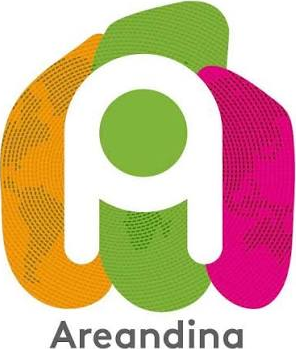

Borrador para revisión. Este texto debe validarlo la oficina jurídica o de protección de datos de Areandina antes de publicarse. Los datos entre corchetes [ ] están por completar.
Esta política explica qué guarda el Tablero de Laboratorios en tu navegador o dispositivo. La versión corta: solo lo necesario para que funcione. No hay cookies de publicidad ni de analítica.
| Elemento | Tipo | Para qué | Duración |
|---|---|---|---|
| Sesión (tablero_token, tablero_expira, tablero_usuario) | Almacenamiento local | Saber que ya entraste con tu código. | 7 días o hasta que cierres sesión |
| Datos sin conexión | IndexedDB | Copia del tablero y de las fichas de equipos, y cambios pendientes por subir. | Hasta cerrar sesión |
| Archivos de la app | Caché del service worker | Abrir la app sin internet: páginas, íconos y bibliotecas. | Hasta la siguiente versión de la app |
| Consentimiento (tablero_consentimiento) | Almacenamiento local | Recordar que viste este aviso. | Hasta que cambie esta política |
| Preferencias | Almacenamiento local | Filtros, vista y ajustes de pantalla. | Hasta que los borres |
Al usar el tablero, el navegador se conecta con estos servicios, que pueden registrar tu dirección IP y aplicar sus propias políticas:
Cuando abres la carpeta de documentos de un equipo pasas a Google Drive, donde rigen las cookies de Google.
En la app, toca el indicador de conexión y elige "Cerrar sesión en este dispositivo": se borra la sesión y la copia de datos. También puedes borrar los datos del sitio desde la configuración del navegador. Sin el almacenamiento necesario el tablero no puede funcionar.
Si esta política cambia, el aviso de cookies volverá a aparecer.